| 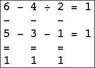 | 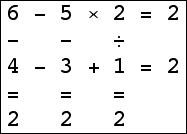 |  | 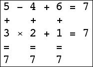 |
An 3×3 isogrid for 15 exists using only addition: the standard 3×3 magic square. There are 3×3 isogrids for 1, 2, 3, 5, 11, 13, and 18 that use only two different operations. Can you find them? There are 3×3 isogrids for 4, 6-10, 12, 14, 16, 20, and 48 using only 3 operations. The 3×3 isogrid for 36 requires 4 operations. Can you find them?
What results are possible with different sized isogrids? Can you find the possible results in a 2×n isogrid in general? I'm particularly interested in possible results of a 4×4 isogrid. In higher dimensions, what is the smallest isobox?
Jordan Balla found a 3×3 isogrid with result 16.
Bill Clagett found all the possible isogrids for the 2×3, 2×4, 3×3, 3×4, and 4×4 cases, including negative and fractional results. Here are his results:
| Size | Possible Results of Isogrids |
|---|---|
| 2×3 | -1, [1,3], 7 |
| 2×4 | -4, -2, -1, [1,4], 9 |
| 3×3 | -10, -8, [-6,-1], [1,16], 18, 20, 36, 48 |
| 3×4 | -18, -16, -14, [-12,30], 32, 33, 36, 40, 44, 48, 56, 60, 1/2, 3/2, 5/2 |
| 4×4 | -80, -72, -64, -60, -56, -48, -45, -42, -40, -36, -35, [-33,138], 140, 141, [143,145], 147, 150, [152,154], 156, 157, [159,162], 165, [168,170], 174, 176, 180, 182, 189, 192, 196, 198, 200, 208, 210, 216, 220, 224, 225, 234, 240, 243, 252, 256, 264, 270, 288, 336, 360, 420, 480, 512, 4096, 16777216, -21/2, -15/2, -11/2, -9/2, -7/2, -5/2, -3/2, -3/4, -2/3, -1/2, -1/3, -1/4, 1/6, 1/4, 1/3, 1/2, 2/3, 3/4, 5/4, 4/3, 3/2, 5/3, 7/4, 9/4, 7/3, 5/2, 8/3, 10/3, 7/2, 11/3, 13/3, 9/2, 14/3, 16/3, 11/2, 13/2, 22/3, 15/2, 17/2, 26/3, 28/3, 19/2, 21/2, 32/3, 34/3, 23/2, 25/2, 27/2, 29/2, 31/2, 33/2, 52/3, 35/2, 39/2 |
This is his amazing 4×4 isogrid with result 224=16777216:
Bill Clagett also noted that there are arrays of numbers which give several different isogrids results depending on the operations inserted. He wondered whether the 3×4 example he found was the smallest one.
Bill Clagett also showed there is a unique 3×3×2 isobox. Below are the two layers. All the signs between the two layers are "–" except for one "^", and all the results are equal to 1.
top layer:
1 ^ 18 ^ 5
^ - +
16 - 7 / 9
^ / -
3 + 11 - 13
bottom layer:
14 - 17 + 4
- - +
15 - 6 - 8
^ - /
2 + 10 / 12
Philippe Fondanaiche also found results of 0-34 for 4×4 isogrids using only addition and subtraction.
Here are the small isogrids:
| 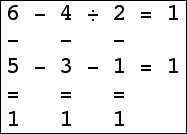 | 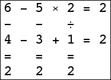 | | 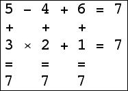 |
| 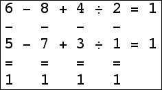 | 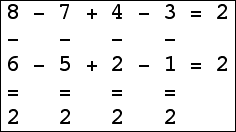 | 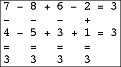 |
| 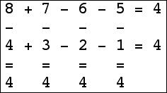 | 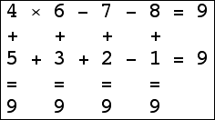 |
| 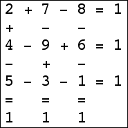 | 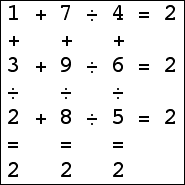 | 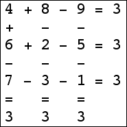 | 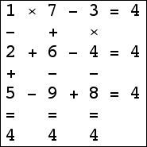 |
| 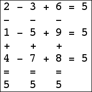 | 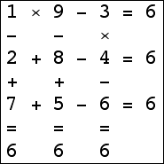 | 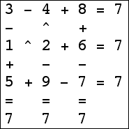 | 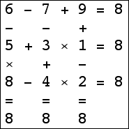 |
| 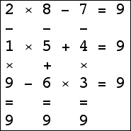 |  | 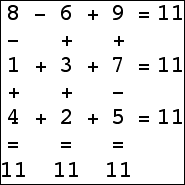 | 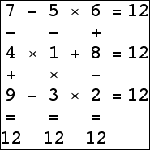 |
| 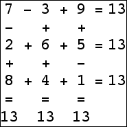 | 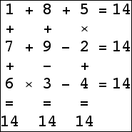 |  | 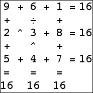 |
 | 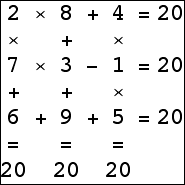 | 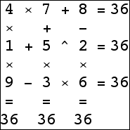 | 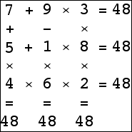 (Bryce Herdt) |
I investigated 2×n isogrids. It turns out results of 2n+1 and some numbers in [1,n] are possible, and nothing in [n,2n] is possible. The following graph shows what exists. the rows indicate n=3 (top) through n=28 (bottom), and the black squares indicate the numbers between 1 and n which are 2×n isogrids.